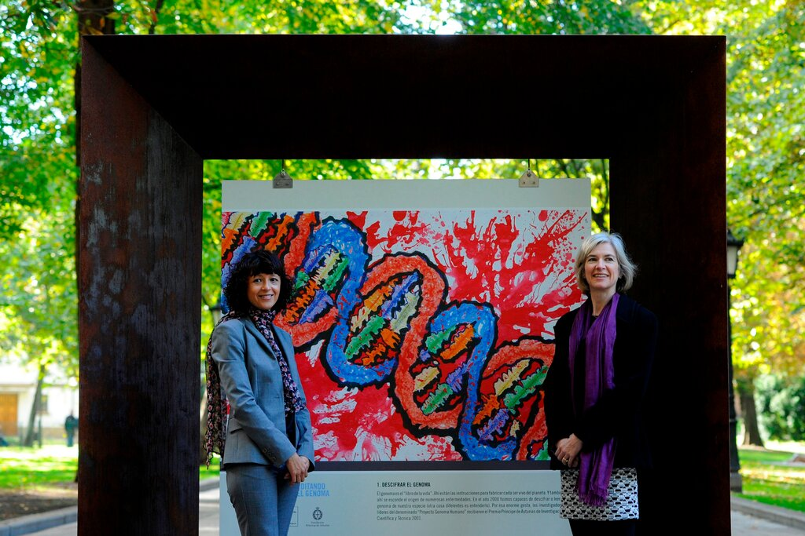

Emmanuelle Charpentier and Jennifer A. Doudna developed the Crispr tool, which can change the DNA of animals, plants and microorganisms with high precision
[View the latest updates to the 2020 Nobel Prize winners list.] The Nobel Prize in Chemistry was jointly awarded on Wednesday to Emmanuelle Charpentier and Jennifer A. Doudna fortheir 2012 work on Crispr-Cas9, a method to edit DNA. The announcement marks the first time the award has gone to two women.
LATEST NEWSUnited Nations World Food Program wins 2020 Nobel Peace Prize “This year’s prize is about rewriting the code of life,” Goran K. Hansson, the secretary-general of the Royal Swedish Academy of Sciences, said as he announced the names of the laureates.
Dr. Charpentier and Dr. Doudna, only the sixth and seventh women in history to win a chemistry prize, did much of the pioneering work to turn molecules made by microbes into a tool for customizing genes — whether in microbes, plants, animals or even humans.
“I’m over the moon, I’m in shock,” Dr. Doudna, a professor at the University of California, Berkeley, said at a news conference on Wednesday.
It has been only eight years since Dr. Doudna and Dr. Charpentier — now the director of the Max Planck Unit for the Science of< Pathogens in Berlin — co-authored their firstpaper demonstrating the power of Crispr-Cas9. Since then, the technology has exploded. Doctors are testing it as a cure for genetic disorders such as sickle cell disease and hereditary blindness. Plant scientists are using it to create new crops. Some researchers are even trying to use >Crispr to bring species back from extinction.
Along with these high-profile experiments, other scientists are using Crispr to ask fundamental questions about life, such as which genes are essential to a cell’s survival. Crispr “solves problems in every field of biology,” said Angela Zhou, an information scientist at CAS, a division of the American Chemical Society.
“This technology has utterly transformed the way we do research in basic science,” said Dr. Francis Collins, director of the National Institutes of Health. “I am thrilled to see Crispr-Cas getting the recognition we have all been waiting for, and seeing two women being recognized as Nobel Laureates.”
Crispr has also become one of the most controversial developments in science because of its potential to alter human heredity. In 2018, He Jiankui, a Chinese scientist, announced that he had used the technology to edit the genes of human embryos, which yielded the world’s first genetically modified infants. Dr. He’s experiments were decried by many in the scientific community as irresponsible and dangerous.
“There is enormous power in this genetic tool which affects us all,” said Claes Gustafsson, chair of the Nobel Committee for Chemistry.
“EDITING HUMANITY”Read Carl Zimmer’s review of a new book on Crispr and
gene editing.Dr. Charpentier and Dr. Doudna both stumbled across Crispr by accident. Dr. Charpentier, a microbiologist, spent a number of years studying Streptococcus pyogenes, a species of bacteria that causes scarlet fever and other diseases. Inspecting the microbe’s DNA in 2006, she and her colleagues discovered a puzzling series of repeating segments.
A few scientists had studied these segments since the 1980s, but no one was sure of their function. Francisco Mojica, a microbiologist at the University of Alicante in Spain, gave these DNA stretches a name in 2000: clustered regularly interspaced short palindromic repeats, or Crispr for short.
Updated Oct. 12, 2020
See all of the 2020 winners here.
Drs. Harvey J. Alter, Michael Houghton and Charles M. Rice received
the prize for medicine for their discovery of the hepatitis C virus.
Roger Penrose, Reinhard Genzel and Andrea Ghez received the
physics prize for their discoveries that have improved understanding
of the universe, including work on black holes.
Emmanuelle Charpentier and Jennifer A. Doudna were awarded the
chemistry prize for their work on genome editing
The Nobel Prize in Literature was awarded to Louise Glück, the
American poet.
This year’s Peace Prize was awarded to the U.N.’s World Food Program.
Two U.S. economists, Paul R. Milgrom and Robert B. Wilson, were
awarded the Nobel in economic science for their work on auction
theory.
A few scientists had studied these segments since the 1980s, but no
one was sure of their function. Francisco Mojica, a microbiologist at
the University of Alicante in Spain, gave these DNA stretches a
name in 2000: clustered regularly interspaced short palindromic
repeats, or Crispr for short.
Dr. Mojica and other researchers spent the 1990s and early 2000s trying to determine why microbes had this mysterious repetitive DNA. It became clear that between these repeats were bits of genetic material derived from viruses that had tried to infect the bacteria. Somehow, the bacteria were grabbing bits of viral genes and storing them away. It was if they were creating an archive of past infections, which they could later use to defend against future attacks.
Dr. Charpentier and her colleagues discovered some of the key steps by which the bacteria used this information to attack viruses. The bacteria made molecules of RNA — ribonucleic acid, a cousin of DNA — that recognized the genes of attacking viruses.
After writing a paper on their discovery in 2011, Dr. Charpentier recognized she needed to collaborate with an expert on RNA molecules to make more progress. That expert was Dr. Doudna.
Dr. Doudna (the first syllable rhymes with loud) had never heard of Crispr until another Berkeley scientist, microbiologist Jill Banfield, brought it to her attention in 2006. Until then, she had studied how bacteria make RNA molecules for other purposes, such as sensing the environment and silencing certain genes.
Dr. Charpentier, 51, and Dr. Doudna, 56, met at a cafe in Puerto Rico in 2011 while attending a scientific conference and immediately started to collaborate on understanding how Crispr worked. Soon, they realized that they might be able to harness the RNA molecules to seek out and alter any piece of DNA.
Bacteria defend themselves by using these molecules to recognize the genes of an attacking virus. The weaponry includes an enzyme called Cas9 that slices the viral genetic material.
Dr. Charpentier and Dr. Doudna realized that they could synthesize a piece of RNA that targeted and chopped up not just a spot on a viral gene — but on any gene. In 2012, the scientists proved this concept could work.
Crispr was not the first tool scientists invented to alter DNA. But previous methods were relatively crude, involving expensive, cumbersome machines and materials. Crispr could become a far more precise genetic surgery.
If researchers used Crispr molecules to make cuts at two neighboring sites on a piece of DNA, for example, the DNA stretch would heal, sewing itself together without the sliced segment. It became possible to insert a new piece of DNA in the place of the removed one. Subsequent research revealed how to use Crispr to alter single genetic letters.
“Other technologies sometimes take a couple of decades before they come into regular practice,” Dr. Collins said. Crispr’s rapid rise to near ubiquity, he added, “is remarkable.”
Jinelle Wint, assistant dean for academic affairs at Stowers Institute for Medical Research in Kansas City, Mo., described this year’s prize as a “historic win,” both because of its recognition of a revolutionary advancement in biomedical science, as well as its championing of women scientists.
Aspiring female scientists, Dr. Wint said, should be empowered to think “that they, too, can be in the next Nobel Prize winners of the future.”
Following her 2011 and 2012 discoveries, Dr. Charpentier was told numerous times by colleagues that Crispr might be Nobel-worthy. But she had trouble internalizing it.
“It’s something you hear, but you don’t completely connect,” she said in a news conference on Wednesday. When she received the call, “I was very emotional,” she said.
Still, experts noted, women make up a paltry percentage of science laureates. Scientists of color, especially those who identify as Black, Latino, Native or Indigenous, have been almost entirely left out of the process.
Early on, Dr. Charpentier and Dr. Doudna recognized the potential dangers of the technology that they helped usher into the world. Dr. Doudna left her lab and hit the lecture circuit. In 2017, she co- wrote a book, “A Crack in Creation” to describe both the promise and the peril of Crispr. Nevertheless, she was taken by surprise a year later when Dr. He announced his reckless experiment in China.
“We as a community need to make sure we recognize we are taking charge of a very powerful technology,” Dr. Doudna said in an interview on Wednesday. “I hope this announcement galvanizes that intention.”
Last month, an international committee concluded Crispr was not mature enough to use for the alteration of human embryos. But the committee did not rule out the possibility that Crispr could someday be used on rare occasions to repair life-threatening mutations.
“We don’t know all the effects of tinkering with the human genome,” said Nita Farahany, a bioethics expert at Duke University in Durham, N.C. “A major advance can introduce major disruptions, and we need to decide how to embrace it in such a way that responsible science progresses.”
Crispr is also the subject of a long-running patent fight. In 2011, Feng Zhang, a biologist at the Broad Institute in Cambridge, Mass., learned of Crispr and recognized that it might serve as a gene- editing tool.
Eventually they ended up in court. While the Broad has won many of the legal battles, the matter remains unresolved.
“It will be interesting to see if the award of the prize changes the parties’ interest in continuing to fight,” said Hank Greely, a professor of law and of genetics at Stanford University. Nothing about the Nobel changes the evidence at hand, he said. But it may “affect the motivations to spend millions of dollars a month.
In a news conference on Wednesday, Dr. Doudna looked past that conflict, instead focusing on the “collaborative spirit” that had driven much of her work with Crispr and acknowledging the many other scientists that had contributed to driving the field forward.
“In any prize, you know, in any work of science, there are many people who contribute along the way,” she said. “And that’s certainly true in the case of Crispr.”After receiving word of the award early Wednesday, Dr. Doudna recalled telling her son, “None of us go into science, or at least I didn’t, to win prizes. We went in because we wanted to understand something true about nature.”
John B. Goodenough, M. Stanley Whittingham and Akira Yoshino were recognized for research on lithium-ion batteries that has “laid the foundation of a wireless, fossil fuel-free society,” according to the prize committee.
Harvey J. Alter, Michael Houghton and Charles M. Rice received the Nobel Prize in Physiology or Medicine on Monday for the discovery of the hepatitis C virus, a breakthrough the Nobel committee said had “made possible blood tests and new medicines that have saved millions of lives.”
Roger Penrose, Reinhard Genzel and Andrea Ghez received the >Physics prize on Tuesday for their discoveries that have improved understanding of the universe, including work on black holes
The Nobel Prizes in Literature will be announced on Thursday in Sweden. The prizes for both 2018 and 2019 were announced last year after a postponement of the 2018 prize. That occurred after the husband of an academy member was accused, and ultimately convicted, of rape — a crisis that led to the departure of several board members and required the intervention of the King of
Sweden.The Nobel Peace Prize will be announced on Friday in Norway Read about last year’s winner, Prime Minister Abiy Ahmed of Ethiopia.
The Nobel Memorial Prize in Economic Science will be
announced Monday next week in Sweden. Read about last year’s winners, Abhijit Banerjee, Esther Duflo and Michael Kremer.Correction: Oct. 7, 2020
Due to an editing error, a previous version of this article misstated
the number of women to have won the Chemistry Nobel. Dr.
Charpentier and Dr. Doudna are the sixth and seventh women to
receive the prize, not the fifth and sixth.
Katherine J. Wu is a reporter covering science and health. She holds a Ph.D. in
microbiology and immunobiology from Harvard University. @KatherineJWu
Carl Zimmer writes the “Matter” column. He is the author of thirteen books, including
“She Has Her Mother's Laugh: The Powers, Perversions, and Potential of Heredity.”
Elian Peltier is a reporter in the London bureau of The New York Times, focusing on
breaking news. @ElianPeltier